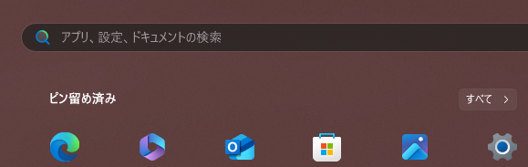
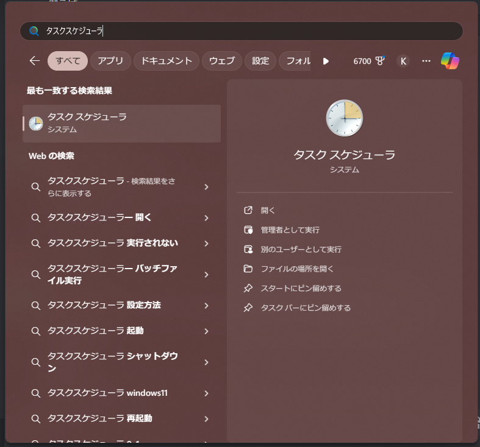
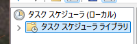
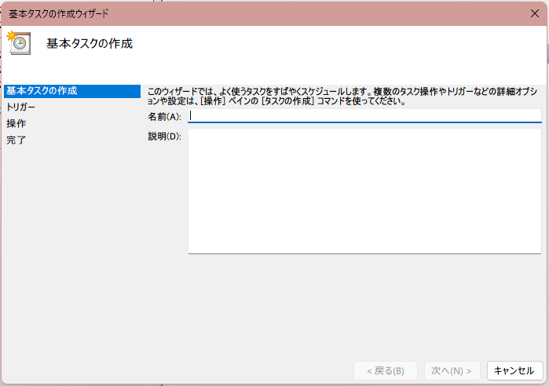
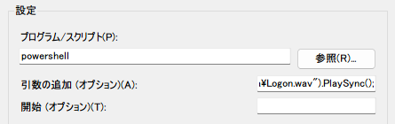

Windows 11でログオン音を流す方法!
ジャンル: Windows 記事作成日: 2024/1/5 タグ: 流す、Windows、ログオン、ログオフ、音声この記事は現在執筆中により不完全な内容が記載されている恐れがあります。申し訳ありませんが、参考程度にお願いいたします。もし記事の内容が空っぽである場合、ほかのサイトへ回っていただくことをおすすめします。
本題
この記事では、Windows 11でログオン・ログオフの音を流す方法を紹介します。方法もとても簡単なので、ぜひ読んでいってください。Windows 11だけでなく、Windows 10やその他タスクスケジューラを利用できるWindowsであれば利用できるので、ぜひ応用してみてください。大雑把な解説が見たい場合はまとめをご覧ください。
タスクスケジューラー
この方法ではタスクスケジューラーを使う方法です。タスクスケジューラーは次の方法で開くことができます。
Windowsキーまたはスタートボタンを押す 
検索欄から「タスクスケジューラ」と打つ。注意として「タスクスケジューラー」ではない。 
先頭に出たタスクスケジューラをクリックする。この時、アイコンが違っている場合は、アプリではないものが開いてしまうので注意。
この方法でタスクスケジューラーを開けたら、次のステップです。
タスクの作成
ここからはタスクを作成していきます。一つ一つ方法を説明していきます。
まず左にあるサイドバーの項目「タスクスケジューラ ライブラリ」をクリックします。 
次に右側にある「基本タスクの作成...」をクリックします。
すると次の画面が現れます。 
名前や説明を任意に設定し、次へをクリック。トリガーは「ログオン時」をクリックし、次へを押します。ちなみに、この選択肢は後々削除するので、自由に選択してかまいません。操作は何も変えず、「プログラムの開始」で次へを押します。するとプログラムの開始項目になるので、「プログラム/スクリプト」と「引数の追加」にそれぞれ内容を入力していきます。
プログラム/スクリプト項目には次を入力します。
powershell次に引数の追加項目にはこれを入力します。
(New-Object Media.SoundPlayer "C:\Users\Public\Documents\Media\Logon.wav").PlaySync(); このような形で入力が完了したら、次へを押し、完了をクリックします。これでイベントの準備は完了です。
次に